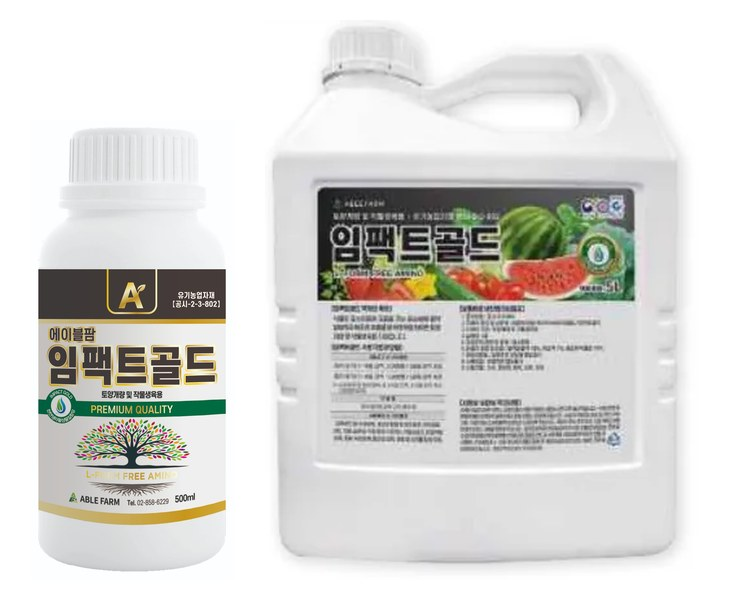

마늘 안내 · 습해·배수 관리
비 그친 다음 날, 마늘밭 고랑부터
한눈에 보기
- 먼저 볼 곳: 비 그친 다음 날, 고랑에 물이 고였는지
- 원리: 물 찬 흙에서는 뿌리가 숨을 못 쉼 농촌진흥청
- 증상: 쉽게 뽑힘, 아랫잎이 누렇게 마름
- 피해 큰 곳: 같은 밭에서도 낮은 곳
- 할 일: 고랑 끝 물길 트기 → 고랑 깊게 → 마르면 물, 비 오면 배수
왜 물이 고이면 마늘이 약해지나
흙 알갱이 사이의 빈틈이 물로 꽉 차면 뿌리가 숨 쉴 공기가 없어집니다. 마늘 뿌리가 제대로 자라지 못해 포기를 당기면 쉽게 뽑히고, 아랫잎부터 누렇게 마릅니다. 전남 해남의 마늘밭에서는 흙 25cm 깊이에 물이 빠지지 않는 단단한 층이 있어 고랑에 물이 계속 고였고, 밭의 약 1/3에서 뿌리가 잘 자라지 못했습니다. 농촌진흥청 현장기술지원
관리 순서
- 비 그친 다음 날, 고랑 보기고랑에 물이 남아 있는지, 밭에서 물이 모이는 낮은 곳이 어디인지 확인합니다.
- 고랑 끝 물길부터 트기고랑 물이 밭 밖으로 나갈 수 있도록 끝부분 물길을 먼저 엽니다. 농촌진흥청
- 고랑을 깊게 다시 파기다음 비에 물이 빨리 빠지도록 고랑을 깊게 정비합니다. 낮은 곳은 더 신경 씁니다. 농촌진흥청
- 마르면 물, 비 오면 배수흙이 너무 마르면 물을 주고, 비가 오면 빨리 빠지게 합니다. 흙을 늘 축축하게 두지 않는 것이 기본입니다. 농촌진흥청
- 밑거름은 알맞게밑거름을 지나치게 많이 주지 않습니다. 농촌진흥청
뿌리·토양 영양 관리
임팩트과립
규산질 원료·휴믹산·당밀에 국내산 효소분해 아미노산을 담은 과립입니다. 흙과 뿌리 주변 환경 관리를 돕습니다.
마늘: 정식 후 또는 멀칭 전 살포
6kg 1봉 300평 · 8kg 1봉 500평

임팩트골드
효소분해 아미노산·해조류추출물·목초액을 담은 액제입니다. 뿌리 주변 토양 관리를 돕습니다.
마늘: 관주
물 2,000L에 5L 1병
꼭 알아두세요. 영양제가 배수를 대신할 수는 없습니다. 고랑 물길 트기와 고랑 정비가 먼저이고, 영양 관리는 뿌리·토양 관리를 돕는 보조 수단입니다. 두 제품 모두 농약이 아니며, 다른 농자재와 섞어 뿌리지 마세요. 잎이 마르는 증상이 번지거나 병이 의심되면 지역 농업기술센터에서 진단을 받고 등록 약제로 방제하세요.
함께 보세요: 「비 그친 다음 날, 마늘밭 고랑부터 보세요」 쇼츠 — 습해 원인·고랑 물길 트기·배수(농촌진흥청 자료 근거).
자주 묻는 질문
비가 많이 온 뒤 마늘밭에서 무엇부터 봐야 하나요?
비 그친 다음 날 고랑에 물이 고여 있는지 먼저 봅니다. 고랑에 물이 남아 있으면 마늘 뿌리가 숨을 쉬지 못해 뿌리 발육이 늦어집니다(농촌진흥청 현장기술지원 사례).
마늘이 쉽게 뽑히고 아랫잎이 누렇게 마르는 이유는?
흙 속 수분이 너무 많으면 뿌리가 약해져 쉽게 뽑히고 아랫잎이 갈색으로 마를 수 있습니다. 같은 밭에서도 물이 모이는 낮은 곳일수록 피해가 컸습니다(전남 해남·경남 남해 사례). 병이 함께 생긴 경우도 있으니 증상이 번지면 지역 농업기술센터에 진단을 받으세요.
마늘밭 물은 어떻게 빼나요?
고랑 끝 물길부터 터서 물이 밭 밖으로 나가게 하고, 고랑을 깊게 다시 파서 비가 올 때 물이 빨리 빠지게 합니다. 흙 속에 물이 안 빠지는 단단한 층이 있으면 배수가 특히 나쁩니다(농촌진흥청).
임팩트과립·임팩트골드는 마늘에 어떻게 쓰나요?
임팩트과립은 정식 후 또는 멀칭 전에 살포하며 6kg 1봉이 300평, 8kg 1봉이 500평입니다. 임팩트골드(500ml·5L)는 관주하며, 5L 1병을 물 2,000L에 탑니다. 다른 농자재와 섞어 뿌리지 마세요. 배수 정비가 먼저이고, 영양 관리는 보조 수단입니다.
근거 자료
- 농촌진흥청 농사로 현장기술지원 「마늘이 월동 후 뿌리 발육이 부진해요」 (2021, 전남 해남) — 고랑 물 고임, 25cm 단단한 층, 낮은 곳 피해, 배수·고랑 정비 — 농사로
- 농촌진흥청 농사로 현장기술지원 「마늘의 뿌리 발육이 부진하고 하위엽이 갈변고사해요」 (2021, 경남 남해) — 흙 수분 과다, 마르면 물·비 오면 배수, 밑거름 과다 금지 — 농사로
- 함께 보기: 마늘 심기 안내 · 영상 「마늘 비닐 덮기」 — YouTube Shorts
- 영상: 에이농티비 「비 그친 다음 날, 마늘밭 고랑부터 보세요」 (2026년 11월 17일 공개)